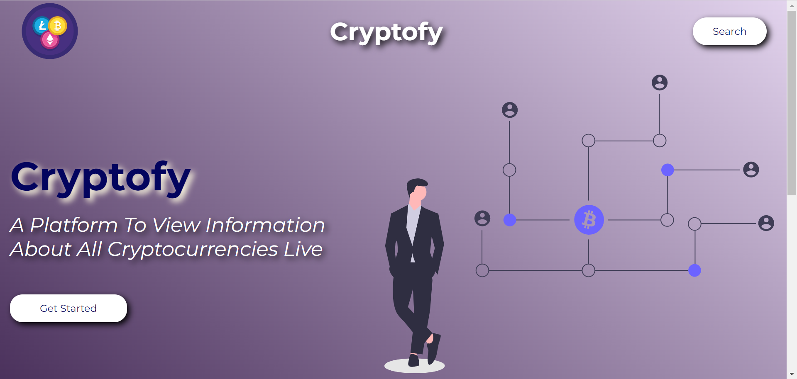
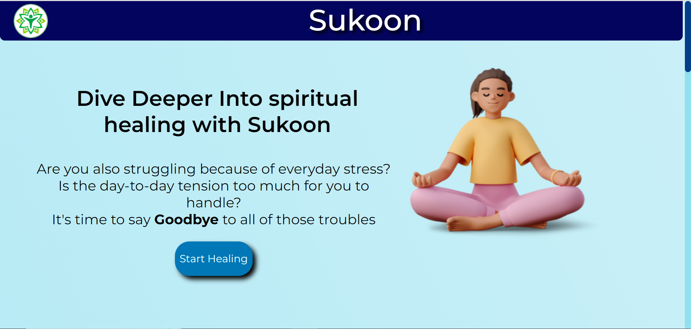
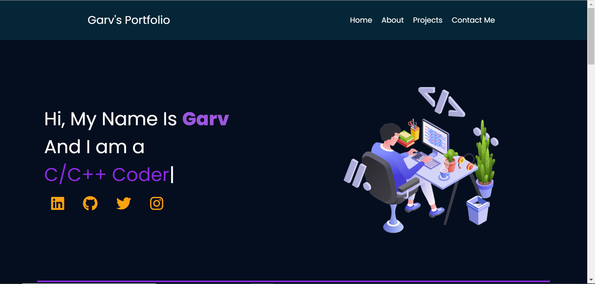

CRYPTOFY
Developed a cryptocurrency tracker using HTML, CSS, and JavaScript. It displays real-time prices and details for top cryptocurrencies using exchange APIs.
VisitAzure Data Engineer
Data Engineer with 2+ years of hands-on experience in Azure data platforms, ETL/ELT pipelines, Databricks, Power BI, and governed analytics solutions.
I am a Data Engineer with 2+ years of experience building and supporting Azure data platforms and end-to-end ETL/ELT pipelines using ADF, Databricks, PySpark, and SQL. I work with Delta Lake, Medallion Architecture, Unity Catalog, and Power BI to deliver scalable, governed, and cost-efficient analytics solutions.
My focus is on turning business requirements into reliable data products, improving pipeline performance, ensuring data quality, and creating dashboards that support better decision-making.
TCS
Client: Virgin Atlantic Airways
SQL, Python, PySpark
Microsoft Azure, ADLS Gen2, Azure SQL
ADF, Databricks, Delta Lake, Medallion Architecture
SQL Server, Azure Cosmos DB
Power BI, DAX, Data Modeling, Power BI Service
Azure DevOps, GitHub, SSMS, Azure Portal, Logic Apps
Bharati Vidyapeeth Deemed University, College of Engineering Pune, Maharashtra, India
BBL Public School, Bareilly, Uttar Pradesh, India
Virgin Atlantic – TCS: REDS AI Hackathon
TCS AI Fridays Hackathin – Delhi NCR Region
Microsoft Certified: Azure Databricks Data Engineer Associate (DP-750)
Microsoft Certified: Azure Data Fundamentals (DP-900)
Google Certified: Cloud AI Leader

Developed a cryptocurrency tracker using HTML, CSS, and JavaScript. It displays real-time prices and details for top cryptocurrencies using exchange APIs.
Visit
Developed a responsive web application where users can recharge their spiritual energy and work through personal challenges independently.
Visit
Designed and developed my personal portfolio website to showcase my skills, projects, and contact information in a clean, easy-to-navigate experience.
VisitI’m open to opportunities in data engineering, analytics engineering, and Azure-based data platform work.